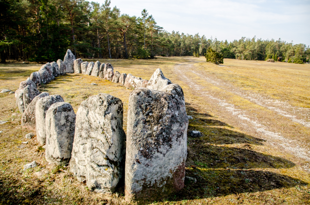
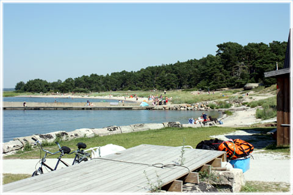
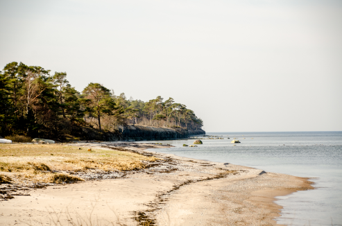

Djupviks hamn ligger i den norra delen av Ekstakustens långa kuststräcka.
Söder om Djupvik hittar man flera besöksmål:
Langsteitu med sitt fågelskyddsområde
Kronvalls fiskeläge där Valdemar Atterdag enligt sägnerna landsteg 1361
Det fyra km långa Ekstakustens naturreservat
Skansudd med Gotlands största kustartelleriskans byggd 1713
Vavle fiskeläge med sin alltmer populära badstrand.
Hela området är otroligt vackert och inbjuder till härliga turer med bil, cykel eller till fots.
Man kan ta med egen picnic eller stanna till vid de olika kiosker och restauranger som finns vid de olika stränderna.
Att se solen gå ned vid Karlsöarna är ett måste!
Skeppssättning
En skeppssättning är en gravplats från yngre bronsåldern (1100-500 f Kr) och på Gotland kan du hitta 350 stycken skeppssättningar.
Denna som finns vid Djupvik, ovanför fiskeläget, är 13 meter lång och 4 meter bred och består av 20 stycken stenar.

Skeppssättningen är alltså en gravplats för en person.
Personen som dött brändes på bål och sedan krossades och tvättades den dödes ben och lades i en lerkruka.
Krukan placerades sedan i en kista av stenhällar i eller intill skeppsättningen.
Badplatser
Utefter Ekstakusten där Djupviks fiskeläge ligger finns några badstränder.
En av dem hittar du här i Djupvik.

Djupviks Strand, foto Bernt Enderborg
Man kan cykla eller åka bil på vägen som slingrar sig ovanför stranden i skogsranden
för att komma till Sandhamn där det finns camping och badstrand (norrut från Djupvik)
eller så åker man söderut och kommer till Snoderviken eller Kvarnåkershamn
som båda har stränder för hela familjen och kiosk och restaurang i närheten.

Restauranger
Djupvik Hotel ligger strax ovanför fiskeläget där man kan äta mat, bo och boka för fester och konferenser.
Läs mer på deras hemsida: http://djupvikhotel.com/
Strax norr om Djupvik hittar man Fröjel Resort som har inomhuspool, gym och spa, samt rum och restaurang.
Läs mer på deras hemsida: https://fröjel-resort.se
Öarna
Utanför Djupvik ser man Stora och Lilla Karlsö som båda är Sveriges enda fågelberg
och man kan besöka båda under sommaren. Båten utgår från Klintehamn
och resan till Lilla Karlsö tar 20 minuter och till Stora Karlsö 30-40 minuter.